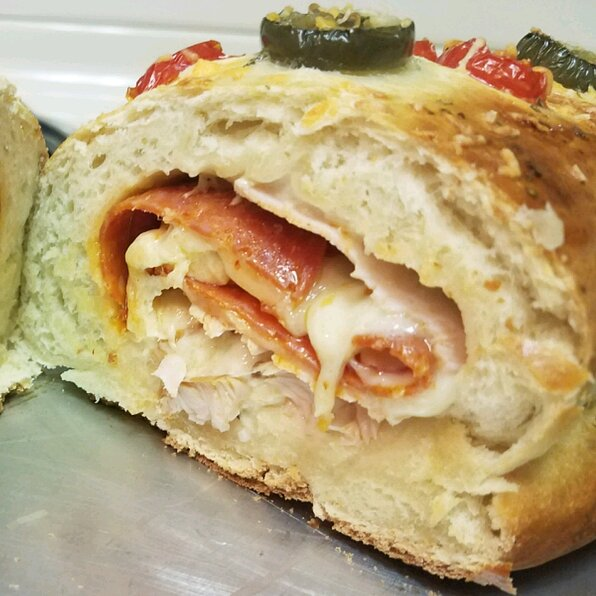

Stromboli

Description
This is a baked sandwich using frozen bread dough, meat, and cheese. My picky eaters love this for an easy weeknight meal and it's great served with a soup.
Prep: 10 min Cook: 30 min Servings: 3 Yield: 3 servings
Ingredients
- ½ pound bulk pork sausage (Optional)
- 1 (1 pound) loaf frozen bread dough, thawed
- 4 slices hard salami
- 4 slices thinly sliced ham
- 4 slices American cheese
- 1 cup shredded mozzarella cheese
- salt and ground black pepper to taste
- 1 egg white, lightly beaten
Steps:
- Preheat oven to 425 degrees F (220 degrees C).
- Heat a large skillet over medium-high heat; cook and stir sausage until crumbly, evenly browned, and no longer pink, about 10 minutes. Drain and discard any excess grease.
- Pat out bread dough on an un-greased baking sheet, to 3/4-inch thickness. Lay salami, ham, and American cheese slices in center of dough. Sprinkle with mozzarella cheese, salt, pepper, and cooked sausage. Wrap dough to cover ingredients, pinching and sealing edges to prevent leakage; brush top with egg white.
- Bake in preheated oven until dough is baked and lightly browned, 17 to 20 minutes.
- Serve with marinara sauce for dipping or enjoy as is.
Nutrition Facts
Per Serving: 1065 calories; protein 59g; carbohydrates 77.8g; fat 54.6g; cholesterol 161.9mg; sodium 3633.1mg.
Original Recipe